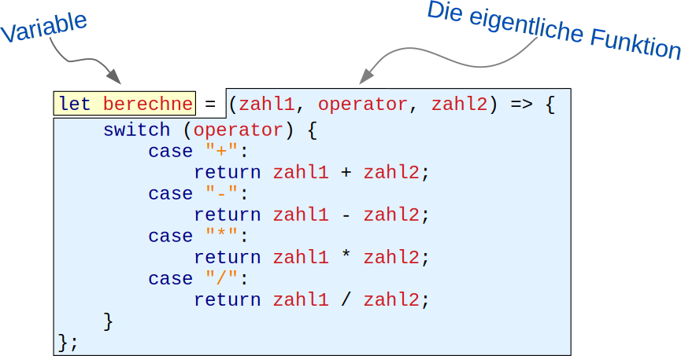

Nachdem du nun HTML und CSS kennst, lernst du hier die Programmiersprache
JavaScript kennen. Neben einer kurzen Einführung, was man damit alles
machen kann, lernst du hier wichtige Grundlagen zur Sprache selbst.
JavaScript im Wandel der Zeit
1995: Netscape und Sun entwickeln JavaScript als browserseitige Scriptsprache
1996: Microsoft integriert JavaScript in den Internet Explorer
1998: JavaScript wird als ECMAscript¹ herstellerunabhängig standardisiert
Variablen werden in JavaScript nicht wirklich deklariert. Sie entstehen
einfach, sobald man ihnen einen Wert zuweist. Nicht vorhandene Variablen
führen auch nicht zu einem Fehler, sondern liefern immer den Wert
undefined.
meinName = "Arthur Dent";
let meinAlter = 31;
var telefonnummer = "+49 721 12345";
Etwas ungewöhnlich ist, dass Variablen automatisch globale Variablen sind,
wenn man ihnen nicht var oder let voranstellt. Hier muss
mal also wirklich aufpassen, damit es nicht zu diffizilen, schwer zu findenden
Fehlern kommt. Älterer Code nutzt noch var, neuer Code sollte
stattdessen aber immer let verwenden,
da es die Gültigkeit der Variablen noch mehr eingrenzt.
let fisch = "Wanda The Fish";
fisch = 27;
Da JavaScript keine wirkliche Deklaration von Variablen kennt, wird auch ihr
Typ nicht fest vorgegeben. Stattdessen hängt es immer davon ab, was man gerade
in eine Variable reinschreibt, welchen Typ sie hat. Im obigen Beispiel handelt
es sich bei der Variable erst um einen String und dann um eine Zahl. Das ist
zwar nicht schön, aber durchaus erlaubt.
Java kennt keine globalen Variablen. Jede Variable gilt nur innerhalb der
Klasse oder Methode, in der sie definiert wurde. Dafür müssen Variablen
immer erst deklariert werden, bevor sie verwendet werden können. Üblicherweise
wird den Variablen bei der Deklaration allerdings gleich ein Wert zugewiesen.
Der obige Quellcode hätte daher auch so geschrieben werden können:
Im Gegensatz zu JavaScript wird der Typ einer Variable durch ihre Deklaration
bestimmt. In JavaScript hingegen ergibt sich der Typ aus dem Inhalt der Variable
und kann sich jederzeit ändern. Für das zweite JavaScript-Beispiel gibt es daher
keine wirkliche Entsprechung in Java. Nur eine weit hergeholte Version mit den
so genannten Boxed Types:
Object fisch = new String("Wanda The Fish");
fisch = new Integer(31);
Funktionen und Methoden werden in JavaScript genauso aufgerufen wie in Java.
Nur mit dem einen Unterschied, dass Java keine Funktionen (Methoden ohne Klassen)
kennt.
let startButton = document.getElementById("start");
showGameOverScreen("Game Over", "Nochmal versuchen", true);
Das sieht fast gleich wie bei JavaScript aus. Nur, dass der Variable
startButton ein expliziter Typ mitgegeben werden muss und dass
Java keine Methoden ohne Klassen kennt. Zwar wäre die folgende Zeile
durchaus zulässig:
if (alter < 18) {
…
} else if (alter < 60) {
…
} else {
…
}
Hier gibt es fast gar keine Unterschiede zu Java. Lediglich
den Operator === kenn Java nicht: Er prüft nicht nur, ob
zwei Variablen inhaltlich gleich sind, sondern auch ob sie denselben
Typ haben:
if (42 == "42") {
// Trifft tatsächlich zu
}
if (42 === "42") {
// Trifft nicht zu
}
An diesem Beispiel siehst du auch, dass JavaScript Strings direkt
vergleichen kann. Eine equals()-Methode brauchen
wir hierfür nicht:
let person1 = "Willy";
let person2 = "Alf";
if (person1 === person2) {
…
} else if (person1 != person2) {
…
}
Das switch-Statement hingegen sieht genau wie in Java aus:
switch (event.type) {
case "keydown":
…
break;
case "click":
…
break;
default;
…
}
if (alter < 18) {
…
} else if (alter < 60) {
…
} else {
…
}
if-Abfragen sehen genau wie in JavaScript aus, nur dass es
den ===-Operator nicht gibt und dass zwei Strings über ihre
equals()- bzw. equalsIgnoreCase()-Methoden
verglichen werden müssen.
if (42 == "42") {
// Kann nie zutruffen
}
String person1 = "Willy";
String person2 = "Alf";
if (person1.equals(person2)) {
…
} else if (!person1.equals(person2)) {
…
}
switch/case sieht genau gleich aus:
switch (event.type) {
case "keydown":
…
break;
case "click":
…
break;
default;
…
}
Aus dem Mathematikunterricht kennst du sicher noch die Fakultätfunktion.
Sie ist so definiert, dass sie einer natürlichen Zahl 𝑛 > 0 das
Produkt aller natürlichen Zahlen von 𝑛 … 1 zuordnet. Am einfachsten
lässt sich das an einem Beispiel zeigen:
Alles klar? Deine Aufgabe lautet, eine JavaScript-Funktion zu schreiben,
mit der die Fakultät einer beliebigen Zahl berechnet werden kann. Du
kannst die Funktion dabei entweder rekursiv durch Aufruf von sich selbst
oder iterativ mit einer Schleife programmieren. In jedem Fall solltest
du aber prüfen, ob die übergebene Zahl größer 0 ist und den Wert
NaN¹ zurück liefern, falls nicht.
Zum Ausprobieren, kannst du die Funktion direkt in JS.Scratch
aufrufen. um Beispiel so:
let faktultaet = n => {
return …
};
fakultaet(5); number 120
¹ NaN steht für „Not A Number”.
let fakultaet = n => {
if (n < 1) {
return NaN;
} else if (n == 1) {
return 1;
} else {
return n * fakultaet(n-1);
}
};
Vorsicht: Diese Lösung nutzt Rekursion und kann daher nur für relativ
kleine Zahlen verwendet werden. Ist die Zahl 𝑛 zu groß, kommt es zu
möglicherweiße zu einem Abbruch.
let fakultaet = n => {
if (n < 1) {
return NaN;
}
let ergebnis = 1;
for (let i = 1; i <= n; i++) {
ergebnis *= i;
}
return ergebnis;
};
Diese Lösung nutzt anstelle der Rekursion eine Schleife und funktioniert daher
mit allen Zahlen.
Hinweis:ergebnis *= i
ist dasselbe wie ergebnis = ergebnis * i.
Analog dazu gibt es noch +=, -= und /=.
Schaue dir den folgenden JavaScript-Code und lassen ihn auch mal in
JS.Scratch laufen.
Anschließend beantworte die folgenden Fragen:
let fibonacci = n => {
if (n < 1) return NaN;
ergebnis = 0;
for (let i = n; i >= 1; i--) {
ergebnis += i;
}
return ergebnis;
};
ergebnis = fibonacci(10);
ergebnis1 = fibonacci(20);
a) Welchen Wert hat die Variable ergebnis nach Aufruf der Funktion
fibonacci(10)?
b) Welchen Wert hat die Variable ergebnis nach Aufruf der Funktion
fibonacci(20)?
c) Wie lässt sich dieser Fehler korrigieren?
d) Wie lässt sich innerhalb einer Funktion kenntlich machen, dass eine
globale Variable angesprochen werden soll?
a) Wie erwartet bekommt die Variable den Wert 55 zugewiesen.
b) Die Variablen ergebnis und ergebnis1 haben beide den
Wert 210. Das war so nicht gewollt, da das Ergebnis nur in
ergebnis1 gespeichert werden sollte.
c) In der Funktion muss ergebnis = 0
durch let ergebnis = 0 oder
var ergebnis = 0 ersetzt werden:
let fibonacci = n => {
if (n < 1) return NaN;
let ergebnis = 0;
for (let i = n; i >= 1; i--) {
ergebnis += i;
}
return ergebnis;
};
d) Durch Zugriff auf das window-Objekt, zum Beispiel so:
window.ergebnis = 55;
Aufgabe 3: Ein kleines JavaScript-Quiz
Was bewirken die folgenden Quellcode-Schnippsel?
a) let ergebnis = 42;
Deklaration einer globalen Variable mit dem Wert 42 (überall sichtbar)
Deklaration einer lokalen Variable mit dem Wert 42 (nur in der aktuellen Funktion sichtbar)
Prüfung, ob die Variable ergebnis den Wert 42 enthält
b) ergebnis = 42;
Deklaration einer globalen Variable mit dem Wert 42 (überall sichtbar)
Deklaration einer lokalen Variable mit dem Wert 42 (nur in der aktuellen Funktion sichtbar)
Prüfung, ob die Variable ergebnis den Wert 42 enthält
c) multiply = (a, b) => return a * b;
Deklaration der beiden Variablen a und b und anschließende Multiplikation der beiden Werte
Definition einer Liste mit den Werten a und b mit anschließender Multiplikation der beiden Werte
Definition einer Funktion, die zwei Zahlen miteinander multipliziert
d) ergebnis = 42; ergebnis = "zweiundvierzig";
Duyk Typing: Die Variable ergebnis ist erst ein Integer, dann ein String
Umwandlung des Werts in der Variablen ergebnis von einem String in einen Integer
Syntaxfehler: Das ist in JavaScript so nicht erlaubt
Lösung: 2, 1, 3, 1
Funktionen – Nichts Besonderes
Anatomie einer Funktionsdefinition

Rückruffunktionen für Events
Häufig erwartet eine Funktion eine andere Funktion als Parameter, um
diese bei Eintreten eines Ereignisses aufrufen zu können. Die aufgerufene
Funktion nennt man Rürckruffunktion oder auch Callback:
let callback = () => { … };
let div = document.getElementById("theater");
div.addEventListener("click", callback);
Lässt sich verkürzen zu:
let div = document.getElementById("theater");
div.addEventListener("click", () => { … });
Funktionen höherer Ordnung
Funktionen höherer Ordnung sind Funktionen, die als Rückgabewert eine
neue Funktion liefern:
let erzeugeFunktion = name => {
return () => `Hello, ${name}!`;
}
let begruesseKitty = erzeugeFunktion("Kitty");
console.log(begruesseKitty());
Arrays in JavaScript beinhalten einfach eine beliebige Anzahl von Einträgen.
Üblicherweise haben alle Einträge denselben Datentyp, dies ist aber kein Muss.
Um einen Eintrag anzusprechen, muss man seinen Index kennen, der genau wie in
Java bei 0 beginnt.
let einkaufsliste = ["Brot", "Milch", "Kaffee", "Nutella",];
let lottozahlen = [3, 12, 24, 28, 31,];
Im folgenden Beispiel sieht man, dass ein Array wie wild alle möglichen Datentypen
mischen kann. Das Array beinhaltet zum Beispiel die Namen zweier Spieler sowie drei
weitere Arrays, die zusammen ein Tic-Tac-Toe-Spielfeld simulieren, und ein Boolean.
Um einen Eintrag aus einem Array zu holen, benötigt man seinen Index. Zum Beispiel
einkaufsliste[1]. Mit einer einfachen
for-Schleife oder der forEach-Methode kann man alle
Einträge eines Arrays abarbeiten.
for (let i = 0; i < einkaufsliste.length; i++) {
console.log(einkaufsliste[i]);
}
lottozahlen.forEach(zahl => {
console.log(zahl);
})
Arrays in Java beinhalten ebenfalls eine beliebige Anzahl von Einträgen, die über
ihren Index angesprochen werden. Jedoch müssen alle Inhalte denselben Datentyp
besitzen. Man kann zum Beispiel nicht ohne weiteres Strings und Integer in einem
Array mischen. Außerdem ist auch die Syntax viel komplizierter.
Der Zugriff erfolgt entweder per Index oder über eine For-Each-Schleife:
for (int i = 0; i < einkaufsliste.length; i++) {
System.println(einkfaufsliste[i]);
}
for (String eintrag : einkaufsliste) {
System.println(eintrag);
}
Seit Java 8 kann man auch eine Lambda-Funktion nutzen:
Die direkte Verwendung von Arrays ist in Java allerdings schon lange eher
unerwünscht. Stattdessen sollte man eine der verschiedenen Collection-Klassen
verwenden, zum Beispiel eine Linked List:
Objekte in JavaScript werden auch Dictionaries genannt. Sie dienen einfach der
Gruppierung mehrerer Werte zu einem Datensatz. Die Einträge eins Dictionaries
werden daher über einen frei wählbaren Namen angesprochen und haben auch keine
feste Reihenfolge.
Die Syntax, um einen einzelnen Wert auszulesen ist dieselbe wie bei einer Liste,
nur mit einem Namen anstelle des Index:
let vorname = mulder["vorname"];
mulder["vorgesetzter"] = "Assistant Director Walter Skinner";
Da Dictionaries und Objekte exakt dasselbe sind, kann man anstelle der eckigen
Klammern auch einfach einen Punkt verwenden:
let vollerName = `${mulder.vorname} ${mulder.nachname}`
mulder.partner = "Dana Katherine Scully";
Auch über die Einträge eines Dictionaries kann man iterieren. Der in-Operator
liefert hierfür die Namen aller Einträge zurück:
for (let key in mulder) {
console.log(mulder[key]);
}
Objekte lassen sich in Java nicht direkt definieren. Man muss immer erst
eine Klasse schreiben und diese dann instantiieren:
public class Person {
public String vorname = "";
public String nachname = "";
public String beruf = "";
public String vorgesetzter = "";
public String partner = "";
}
Person mulder = new Person();
mulder.vorname = "Fox";
mulder.nachname = "Mulder";
mulder.beruf = "Special Agent FBI";
mulder.vorgesetzter = "Walter Skinner";
mulder.partner = "Dana Scully";
Allerdings gibt es mit der Map etwas ähnliches wie Dictionaries.
Denn eine Map bildet einen beliebigen Schlüsselwert auf ein beliebiges
Objekt ab. Dictionaries entsprechen daher am ehestem folgendem Konstrukt in Java:
Indem man Arrays und Dictionaries kombiniert, kann man beliebig komplexe
Datenstrukturen zusammensetzen. Das Format ist dabei so beliebt, dass es
auch unter dem Namen
JSON¹ als eigenständiges Datenformat existiert und unter anderem zum
Datenaustausch mit dem Server genutzt werden kann. Hier ein Beispiel mit
einem
alten Disney-Klassiker: 🦁
Will man nun den Namen von Angela Lansbury auslesen, kann man mit folgenden
Ausdrücken darauf zugreifen:
dieTollkuehneHexe["darsteller"][0]
dieTollkuehneHexe.darsteller[0]
Natürlich kann man auch ein Array mit Dictionaries drin definieren:
let filme = [
{
titel: "Die tollkühne Hexe in ihrem fliegenden Bett",
land: "USA",
jahr: 1971,
darsteller: [
"Angela Lansbury",
"David Tomlinson",
"Roddy McDowall",
…
]
},
{
titel: "Spaceballs",
land: "USA",
jahr: 1987,
darsteller: [
"Mel Brooks",
"John Candy",
"Rick Moranis",
…
]
},
{
titel: "M - Eine Stadt sucht einen Mörder",
land: "Deutschland",
jahr: 1931,
darsteller: [
"Peter Lorre",
"Inge Landgut",
"Ellen Widmann",
…
]
}
];
Du siehst, das ganze ist wahnsinnig flexibel und auch noch einfach zu schreiben. 👍
¹ JavaScript Object Notation
Vergiss es. Ohne Klassen läuft in Java nichts. 😛 Diese müssen wir erst einmal
definieren. Zum Glück speichern wir bei den Darstellern nur die Namen. Denn sonst
hätten wir dafür auch nochmal eine Klasse gebraucht. Will man es besonders schön
machen, muss man sogar für jedes Attribut eine Setter- und eine Getter-Methode
anlegen.
import java.util.ArrayList;
import java.util.List;
public class Film {
private String titel = "";
private String originalTitel = "";
private String land = "";
private String originalSprache = "";
private int jahr = 0
private List<String> darsteller = new ArrayList<>();
public void setTitel(String titel) {
this.titel = titel;
}
public String getTitel() {
return this.titel;
}
… gefühlte 1000 Zeilen später …
}
Dann können wir endlich ein Objekt erzeugen:
Film dieTollkuehneHexe = new Film();
dieTollkuehneHexe.setTitel("Die tollkühne Hexe in ihrem fliegenden Bett");
dieTollkuehneHexe.setOriginalTitel("Beknobs and Broomsticks");
dieTollkuehneHexe.setLand("USA");
dieTollkuehneHexe.setOriginalSprache("Englisch");
dieTollkuehneHexe.setJahr(1971);
dieTollkuehneHexe.darsteller.add("Angela Lansbury");
dieTollkuehneHexe.darsteller.add("David Tomlinson");
dieTollkuehneHexe.darsteller.add("Roddy McDowall");
dieTollkuehneHexe.darsteller.add("Sam Jaffe");
…
Natürlich hätten wir noch ein paar Sachen vereinfachen können. Zum Beispiel indem
wir der Klasse einen gescheiten Konstruktor und ein paar Hilfsmethoden spendiert
hätten. Weniger Quellcode wäre es deshalb natürlich nicht geworden. Die Klasse
Film wäre aber angenehmer zu verwenden gewesen (worauf man immer achten
sollte 😌).
Aufgabe 4: Verstehst du das?
Welches Ergebnis liefert der folgende Quellcode?
caesar = [
() => "Veni, Vidi, Vici", // Ich kam, sah und siegte
() => "Alea iacta est", // Die Würfel sind gefallen
() => "Cras legam", // Morgen werde ich es lesen
];
zusammenfuegen = (string, callback) => {
return string + ": " + callback();
}
ergebnis = zusammenfuegen("Cäsar", caesar[1]);
Lösung: „Cäsar: Alea iacta est” 🎲🎲
Aufgabe 5: Ein kleines JSON-Quiz
Was bewirken die folgenden Quellcode-Schnippsel?
a) let movie = {id: 1, name: "Moon", year: 2009};
Definition einer Liste mit drei Werten
Definition eines Dictionaries mit drei Werten
Definition dreier Variablen
b) let favorites = ["Toy Story", "Anchorman", "Gravity", "The Founder"];
Definition eines Dictionaries mit vier Werten
Definition einer Liste mit vier Werten
Definition einer Methode mit vier Parametern
c) let cds = [{name: "Tracker", year: 2015}, {name: "Privateering", year: 2013}];
Angenommen du hast eine Datenbank mit folgenden Tabellen. Wie können
dieselben Daten in JavaScript beschrieben werden?
Alben
ID
Albumtitel
Künstler
Jahr
1
Tracker
Mark Knopfler
2015
2
X
Ed Sheran
2014
3
Liquid Spirit
Gregory Porter
2013
Titel
Album ID
Track
Songtitel
1
1
Laughs And Jokes And Drinks And Smokes
1
2
Basil
2
1
One
2
2
I'm A Mess
3
1
No Love Dying
…
…
…
a) Schreibe eine JavaScript/JSON-Datei, die exakt dieselben Daten enthält.
Anstelle von zwei Listen solltest du jedoch nur eine Liste haben, in der
sowohl die Alben als auch ihre Titel enthalten sind.
b) Wie kann anschließend auf den Songtitel „Basil” zugegriffen werden?
a) Anmerkung: Das ist nur eine mögliche Lösung. Statt des Arrays auf oberster Ebene
wäre auch ein Dictionary denkbar, bei dem die Album-ID als Schlüsselwert benutzt wird.
Die Songtitel sollten sinnvollerweise auf jeden Fall in einem Array gespeichert werden.
Das Array könnte aber anstatt der Strings auch Dictionaries enthalten, so dass zu jedem
Songtitel noch weitere Daten gespeichert werden könnten.